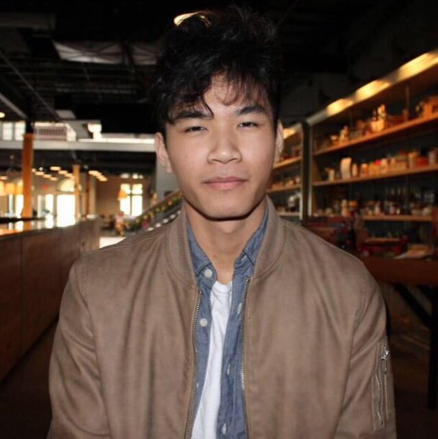

About me

I was born here in Atlanta Georgia but moved to South Carolina two years ago and recently moved back so that I can take this course. When I was a kid I really enjoyed playing games on the computer so I thought why not try coding for fun. After messing around for a few months jumping around different languages such as Java , lua , and python I decided to take coding seriously and stumbled upon this course online.
During my free time I like to mess around on CSS , learn new songs on my guitar , play games , and look for new songs to listen to. I played tennis and basketball during my middleschool and highschool years and was thinking of playing basketball professionally until I recieved an ankle injury and took up coding.